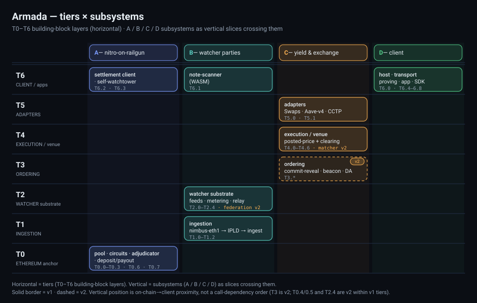

5. Building Block View
arc42 §5 · 2026-10-20
This section gives the static decomposition of the system. Level 1 is the seven tiers (T0–T6) — horizontal building-block layers running from the on-chain anchor up to the client — and each tier's whitebox detail lives in its own doc (T0-ethereum-anchor.md … T6-client-apps.md). The four subsystems — work packages A/B/C/D (§0) — are the vertical slices: each owns T#.# items across several tiers and consumes the rest across ICDs. Tiers and subsystems are two axes over one item set, and the item registry below is the single model of record. Every buildable item carries one T#.# id with its status, read from the code, not from a plan.
The ship-armada repos — armada-poc, armada-circuits, armada-deployments, armada-nitro, armada-sdk, armada-client, armada-relayer, armada-interface — already carry the pool, the circuits, the adjudicator, the client SDK and the web app. This registry states what each item is, cites the code, and marks what remains as a plan. See labbook/2026-10-19-docs-versus-code.md for the audit and the operator rulings that this section follows.
Level 1 — the tier stack
tier building blocks owner status
------------------------------------------------------------------------------------------
T6 CLIENT / apps web app (built) · note-scanner · prover · wallet A·B·D partly built
T5 ADAPTERS CCTP (built) · Aave-v4 yield (built) · Swaps C partly built
T4 EXECUTION / venue posted-price venue + clearing C not built
T3 ORDERING commit-reveal + beacon · epoch set-agreement · DA C not built
T2 WATCHER substrate proof verification (nimbus proxy) · relay fee B in progress
T1 INGESTION nimbus verified proxy over execution + beacon data B in progress
T0 ETHEREUM anchor pool · circuits · adjudicator · governance A built/partly built
Read this as a layered building-block view: the tiers are horizontal layers, and the subsystems (A/B/C/D) are vertical slices that cross them. The owner column is each tier's primary subsystem; T6 is shared. Vertical position is on-chain-to-client proximity. The status column reports what the code holds today, and each item in the registry below carries its own status.

| Tier | Responsibility | Owner(s) | Whitebox |
|---|---|---|---|
| T0 Ethereum anchor | On-chain pool, circuits, adjudicator, governance and revenue contracts | A | T0-ethereum-anchor.md |
| T1 Ingestion | The proof path: the nimbus verified proxy over execution and beacon data | B | T1-ingestion.md |
| T2 Watcher substrate | A cache the proxy re-verifies, with relay fee and federation attestation | B | T2-watcher-substrate.md |
| T3 Ordering (plan) | Provably-fair sequencing for a future matcher | C (plan) | T3-ordering.md |
| T4 Execution / venue (plan) | Posted-price RFQ clearing | C (plan) | T4-execution-venue.md |
| T5 Adapters | CCTP, Aave-v4 yield, and a routing interface; no Swaps contract | C | T5-adapters.md |
| T6 Client / apps | The armada-interface web app, note-scanner, prover, and SDK |
A · B · D | T6-client-apps.md |
Item registry (the single model)
Facets: status (built · partly built · not built · in progress — on an unmerged branch) and the code location that proves it. A release of v1 was the shipping plan when an item had no code; where the code already stands, the registry drops the plan label and states the fact.
T0 · Ethereum anchor
The pool, the circuits, the adjudicator and the deposit/payout boundary already exist. ArmadaNitroAdjudicator carries both the adjudication and the deposit/payout roles together (ruling 1, labbook/2026-10-19-docs-versus-code.md).
| id | item | status | code |
|---|---|---|---|
| T0.0 | Shielded pool — PrivacyPool, routed by delegatecall to four modules (ShieldModule, TransactModule, MerkleModule, VerifierModule); no proxy; a 16-deep commitment tree per treeNumber; a token blocklist (USDC exempt); a shield fee (MAX_SHIELD_FEE_BPS = 1000, deployed at 50 bps) |
built | armada-poc@102f17b8:contracts/privacy-pool/PrivacyPool.sol:20,39,330-336, contracts/privacy-pool/modules/MerkleModule.sol:13 |
| T0.1 | Circuits + trusted setup — one Transact(N,M) circom template, 19 (nIn,nOut) shapes; Groth16; Phase-1 reuses the community Perpetual Powers of Tau; the Phase-2 ceremony is open, not finished (v1.0.0-ceremony manifest lists every shape "status": "open", no beacon) |
partly built | armada-circuits@ef2682f:src/operations/Transact.circom; tag v1.0.0-ceremony:ceremony/manifest.json |
| T0.2 | Nitro adjudicator — ArmadaNitroAdjudicator extends go-nitro's NitroAdjudicator; six commits patch the vendored contracts (EIP-1271 participants, a guarantee-check fix, measured-balance deposit crediting, an asset allow-list, a per-channel reentrancy lock, SafeERC20 payout), so this is a patched adjudicator, not a vanilla deploy. It also carries the deposit/payout boundary: depositFromNote funds a channel from a shielded note, and a SHIELD-type allocation pays a note back out in _executeSingleAssetExit |
partly built | armada-nitro@55939ef:src/ArmadaNitroAdjudicator.sol:93-108,136-150 |
| T0.4 | Registry + bond contract — venue/party bonding | not built | — |
| T0.5 | Sequencing-cert + fraud-proof verifier | not built | — |
| T0.6 | Native channelized commitment — amount-privacy-in-play; a circuit change (optional) | not built | — |
| T0.7 | Anonymity-set strategy — grow the crowd with the pool's own deposits; the wallet offers a move from Railgun, with its security costs shown before confirmation (ADR-0006, T6.7) | strategy | — |
| — | Governance and revenue contracts — ArmadaGovernor (UUPS, five proposal types, a Security Council veto), ArmadaTreasuryGov, TreasurySteward, ArmadaToken (ERC20Votes, 12M fixed supply), ArmadaCrowdfund, ArmadaWindDown, ArmadaRedemption, AdapterRegistry, RevenueCounter, RevenueLock, RevenueReserveDistributor |
built | armada-poc@102f17b8:contracts/governance/, contracts/crowdfund/ |
T1 · Ingestion
The proof path is the nimbus verified proxy, not a nimbus-eth1 state-diff emitter into IPLD (ruling 8, brief §4). armada-nitro's vendored go-nitro and PrivacyPool need no change for this path; the proxy verifies RPC answers upstream of the client.
| id | item | status | code |
|---|---|---|---|
| T1.0 | Proof source — the nimbus verified proxy (status-im/nimbus-eth1): a native binary, libverifproxy.a with C/Go bindings, and a WASM build; it anchors headers to a beacon light client and verifies storage with EIP-1186 proofs |
in progress (upstream, unintegrated) | nimbus-eth1:engine/blocks.nim:105-128, engine/accounts.nim:26-125, Makefile:346-398 |
| T1.1 | Inclusion and completeness — the proxy fetches eth_getBlockReceipts for a block, rebuilds the receipt trie, and rejects the block if the root disagrees with the header; this proves one log and the completeness of the block's logs. eth_getLogs ranges are not used, because an omitted log is undetectable in a range |
in progress (upstream, unintegrated) | nimbus-eth1:engine/receipts.nim:53-57,132-173 |
| T1.2 | Fixturenet patch — the proxy's genesis-parameter loader hard-codes sepolia/hoodi; a custom-network patch is needed to point it at the armada-nitro fixturenet's lighthouse genesis |
not built | nimbus-eth1:engine/genesis_params.nim:48-70 |
T2 · Watcher substrate
watcher-ts is the indexer, not a proof-carrying feed; it runs server-side only, on Postgres, and serves an optional, unverified cache. A client re-verifies anything it reads from the cache through the proxy (ruling 7, brief §4).
| id | item | status | code |
|---|---|---|---|
| T2.1 | Relay fee — armada-relayer's actor charges a flat USDC fee from a gas estimate |
partly built (different mechanism) | armada-relayer:relayer-v2/.../fee-calculator.ts |
| T2.2 | Indexer — watcher-ts on a Postgres backend, server-only; today's live indexer is armada-relayer's Ponder/Postgres watcher |
not built (watcher-ts); built (Ponder, to be replaced) | watcher-ts@18ca4e1a:packages/util/src/database.ts:98 |
| T2.3 | Transport — no Waku, no libp2p anywhere in the client/relayer/interface repos | not built | — |
| T2.4 | Federation + bond — independent watchers sign a snapshot CID; a client accepts a CID that several of them sign | not built (design only) | — |
T3 · Ordering (plan)
| id | item | status | code |
|---|---|---|---|
| T3.0 | Commit-reveal sequencer + randomness beacon | not built | — |
| T3.1 | Epoch set-agreement / DA | not built | — |
| T3.2 | Attestation — sequencing certs / inclusion receipts | not built | — |
T4 · Execution / venue (plan)
No venue contract and no matcher exist in armada-poc. These items stay a plan.
| id | item | status | code |
|---|---|---|---|
| T4.0 | Posted-price contract | not built | — |
| T4.1 | Quote/settle ForceMove app | not built | — |
| T4.2 | Venue solver | not built | — |
| T4.3 | Fee-split allocation | not built | — |
| T4.4 | ETH yield — shielded wstETH note; any non-blocklisted ERC-20 can already be shielded, so no new contract is needed | built (as a consequence of T0.0's design) | armada-poc@102f17b8:contracts/privacy-pool/modules/ShieldModule.sol:258 |
| T4.5 | USDC yield — LP-buffered Aave rail | not built | — |
| T4.6 | ex_net matcher + LP vault | not built | — |
T5 · Adapters
| id | item | status | code |
|---|---|---|---|
| T5.0a | CCTP — PrivacyPool/PrivacyPoolClient/CCTPHookRouter implement cross-chain shield/unshield over CCTP v2 |
built | armada-poc@102f17b8:contracts/privacy-pool/PrivacyPool.sol:166,196,224 |
| T5.0b | Aave-v4 yield — ArmadaYieldAdapter/ArmadaYieldVault, through the pool's own adaptContract/adaptParams binding; not a Railgun RelayAdapt/Cookbook recipe, because no RelayAdapt contract exists in this codebase |
built | armada-poc@102f17b8:contracts/yield/ArmadaYieldAdapter.sol:27-40 |
| T5.0c | Swaps | not built | — |
| T5.1 | Routing interface — how a future T4 venue would route to the adapters | not built | — |
T6 · Client / apps
armada-client, meant to host a React Native wallet, has no application code. The live client is armada-interface, a React 19 + Vite web app, wired to armada-sdk.
| id | item | status | code |
|---|---|---|---|
| T6.0 | Wallet base — armada-interface holds keys in browser memory (keyManager.ts); no BIP-39/HD custody, no secure enclave, no React Native code |
built, web only | armada-interface:src/lib/shielded/keyManager.ts |
| T6.1 | Note-scanner + prover — browser note scanning and a snarkjs Web Worker Groth16 prover |
built | armada-interface:src/lib/shielded/sync.ts,sdk-prover.ts; armada-sdk@db5757f:src/prover/index.ts |
| T6.2 | Settlement client — drives PrivacyPool shield/transact calls; no code drives an armada-nitro channel lifecycle yet |
partly built | armada-interface:src/features/{shield,transfer-shielded,unshield}/handler.ts |
| T6.3 | Self-hosted watchtower — armada-nitro's e2e gate harness has a watchtower (env/gates/watchtower/watch.ts); no client watchtower exists |
not built (client); built (test harness only) | armada-nitro@55939ef:env/gates/watchtower/watch.ts |
| T6.4 | Address rotation + loyalty keys | not checked | — |
| T6.5 | Mobile transport — one TypeScript client stack on four targets: Linux server, browser, iOS, Android (armada-client docs/SPEC.md); libverifproxy.a has no upstream iOS/Android build yet |
not built | armada-client@78a8fdc:docs/SPEC.md |
| T6.6 | Groth16 mobile proving — a browser Web Worker prover exists (T6.1); no native mobile (rapidsnark/mopro) prover | partly built | see T6.1 |
| T6.7 | Armada-branded app + SDK wiring; wallet move from Railgun (the security costs are in T6.7 and §8.2) | built (app); move from Railgun not built | armada-interface |
| T6.8 | Identity — optional Self zk-passport attestation | not built | — |
Decisions that shaped these items: §9 ADRs. Recurring concerns spanning tiers: §8 cross-cutting concepts. Status audit: labbook/2026-10-19-docs-versus-code.md, labbook/2026-10-19-unified-stack-and-verified-note-sync.md, labbook/2026-10-19-nimbus-verified-proxy-proofs.md.
Generated from engineering/05-building-block-view.md by tools/render-engineering.sh — do not hand-edit. Internal Google Docs require Laconic/Vulcanize access.